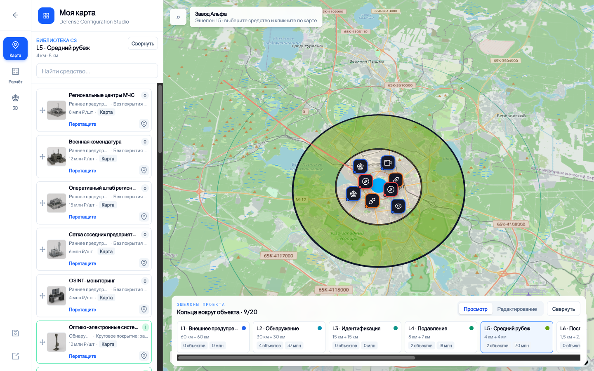
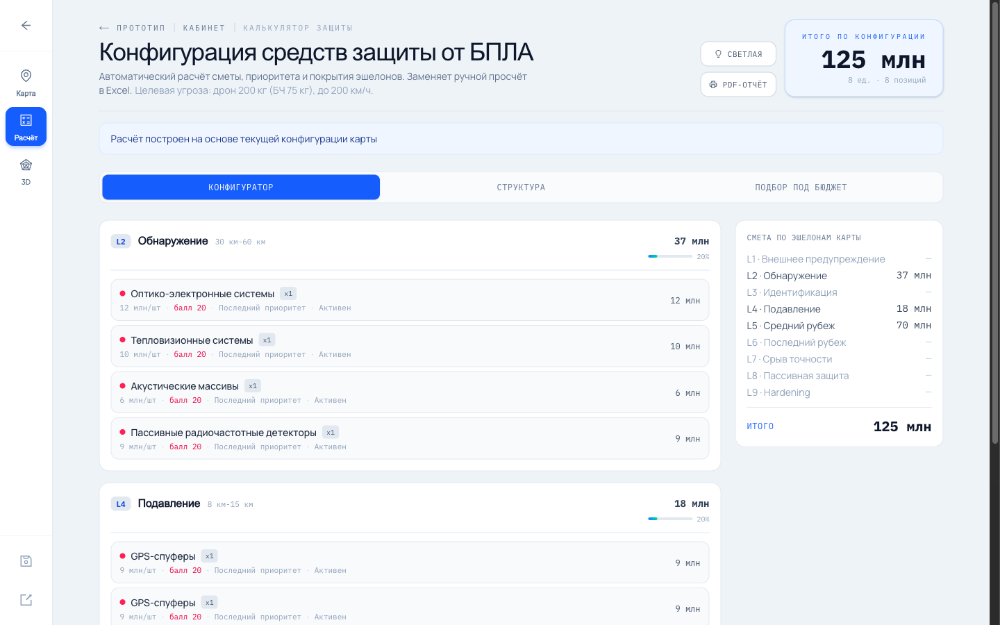
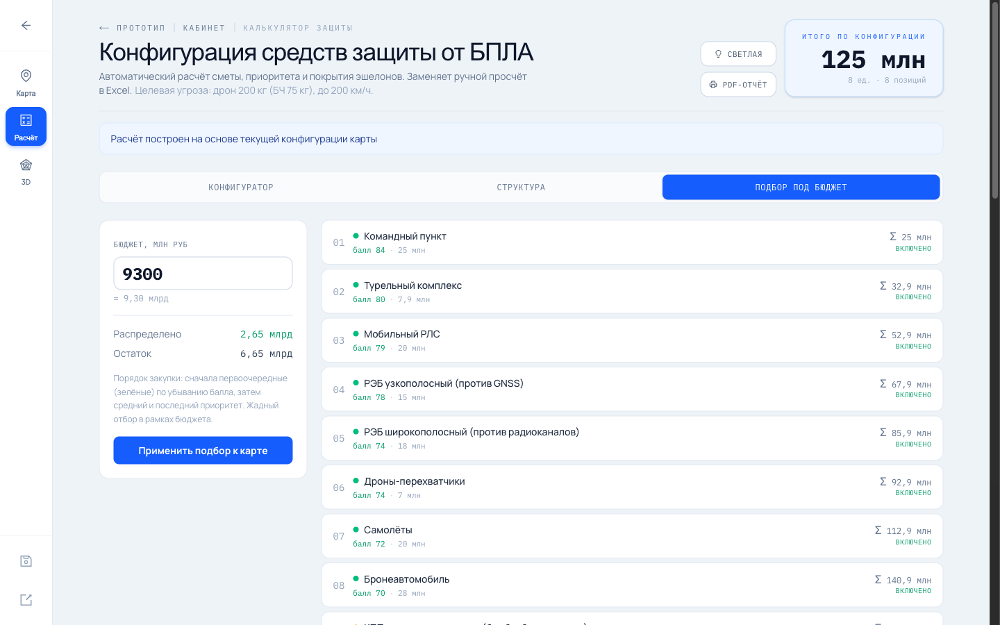
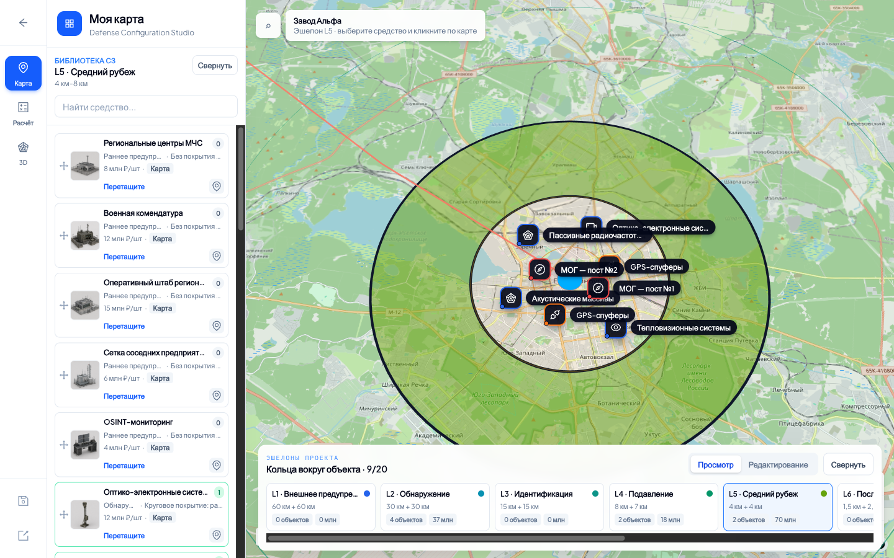

Финансово-аналитическое ядро
Стоимость по объектам, эшелонам, типам и итого. Бюджетный лимит, остаток, контроль превышения. Сравнение вариантов — деньги против эффективности.
Fortis превращает планирование защиты предприятия в интерактивную модель на карте. Разместите средства, увидьте зоны покрытия и ограничения, мгновенно получите стоимость и сравните варианты — а затем выгрузите готовый отчёт.
Мирная аналитическая платформа для бизнеса — не военный продукт.
Каждый элемент на карте — это деньги, физика покрытия, слой защиты и набор ограничений. Fortis отвечает на главный вопрос бизнеса: сколько стоит достаточная защита и что мы за это получаем.
Стоимость по объектам, эшелонам, типам и итого. Бюджетный лимит, остаток, контроль превышения. Сравнение вариантов — деньги против эффективности.
Карта — расчётная модель, а не иллюстрация. Зоны покрытия кругом, сектором и полигоном, слои защиты, географические ограничения. Что на карте — то в отчёте.
Защита строится слоями по дистанции: обнаружение → подавление → активное противодействие → резерв. Понятная иерархия данных, навигации и интерфейса.
Выбираете предприятие, центр объекта становится точкой отсчёта эшелонов.
Перетаскиваете средства из библиотеки на нужный слой защиты.
Видите зоны действия, конфликты, жилые зоны и географию.
Мгновенный пересчёт цены и остатка лимита при каждом изменении.
Сравниваете варианты и выгружаете отчёт с картой, ТТХ и суммами.
Живая сводка текущей конфигурации: стоимость по объектам, эшелонам и типам. Бюджет в режиме «ограничен / не ограничен», остаток и предупреждение при превышении. Пустая карта — пустой отчёт, без «призрачных» данных.
Слоистая, расширяемая архитектура. Новые типы средств, поля карточек и интеграции добавляются без переписывания ядра. Чистые модульные границы — быстрая доработка под запрос заказчика.
Карта, эшелоны, библиотека средств, размещение, покрытие, видимость слоёв.
Расчёт по объектам/эшелонам/типам, лимиты, остаток, контроль превышения.
Детальные ТТХ, пользовательские карточки, документы, составной объект МОГ.
Та же конфигурация в объёме — единая модель 2D ↔ 3D без расхождений.
Радиоэлектронная совместимость, жилые зоны, рельеф — подсветка конфликтов.
Ретроспектива инцидентов, моделирование, индекс устойчивости объекта.
Реальные экраны Fortis: конфигурация защиты на карте и живой финансовый расчёт по ней. Карта, эшелоны, стоимость и подбор под бюджет — один проект, один источник правды.




Слот для моушен-видео
Сюда встанет AI-видео на нейтральную тему (данные, аналитика, расчёты, команда) или скринкаст реального интерфейса.
Современный стек, аккуратная архитектура и инженерная дисциплина: единый источник правды, версионирование конфигураций, тесты и документированные решения. Зрелый продукт, а не прототип.
Живое демо: соберём конфигурацию защиты вашего объекта, посчитаем стоимость и покажем готовый отчёт.